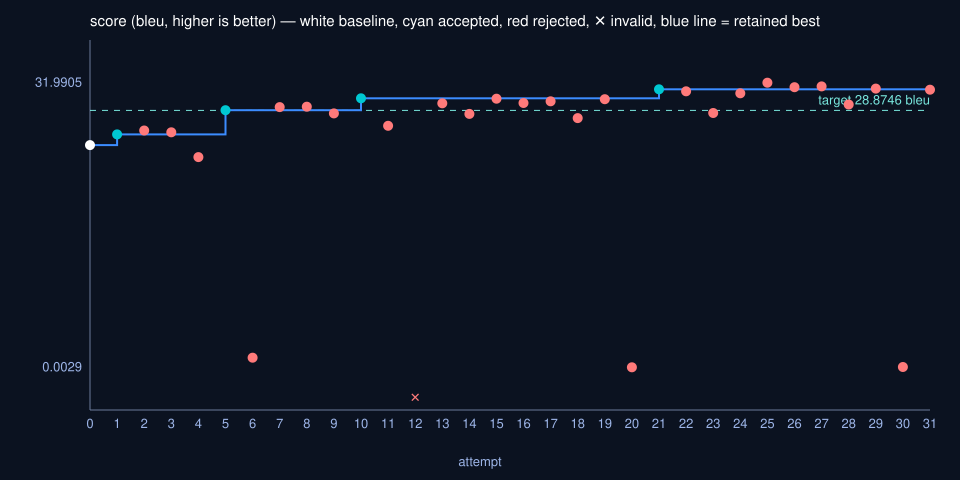
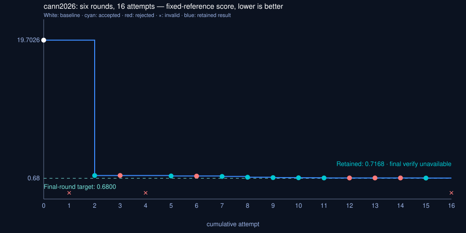

Rework rarely starts in the code — it starts before the target is agreed.
autodev is a clarify-first Agent Skill for feature development, bug fixes, and performance optimization. Agree on one target, iterate in an isolated judged loop, and hand back evidence you can re-run yourself.
Install the skill
npx skills add Momoyeyu/autodev -g
Works with any agent that loads SKILL.md — the judge only runs the project's own checks.
Clarify ends with one review of the whole pass — target, baseline, boundaries in one look. Loop implements exactly that agreement. Handoff hands back evidence you can check.
1
Clarify
One pass: inspect the real code, prepare the target, record the baseline, propose the boundaries. A negative control proves the target can fail — then you review all of it, once.
initnegative controlbaseline
One review of the whole pass
2
Loop
Implement the agreement in a dedicated git worktree. Every attempt is a commit; the judge runs the project's own checks and keeps the raw output; a rejected attempt is reset away with no residue.
startattemptstatusworktree
3
Handoff
Open handoff.html and check the work yourself: the artifact against the agreement, every result tied to the command that produced it. Then merge.
verifyreporthandoff.html
You accept the result
Three scenarios
One protocol, three targets
The target changes with the task. The discipline — agree, iterate, prove — does not.
Feature development
Target — a blueprint: architecture and flow, stable element IDs, build order
Clarify draws the as-is state from the real code and drafts the to-be blueprint. Loop builds it element by element in dependency order. Handoff sets the as-built diagrams next to the blueprint, with the commit behind each element.
Target — a passing test set: reproduction plus regressions, frozen by hash
Clarify writes the reproduction test that must fail on the unchanged source. Loop fixes until every agreed test passes — the test files stay frozen. Handoff delivers each case green with its raw output.
Target — one numeric score: one direction, a margin bigger than noise
Clarify fixes one benchmark, measures the baseline, and proposes the threshold, editable files, and time budget. Loop optimizes and keeps the best verified state; the ruler never changes mid-loop. Handoff renders one chart of what actually happened.
autodev is a protocol plus one small judge — the parts that can be checked mechanically are checked every round, with raw output kept.
The judge actually runs
autodev_verify.py calls only the project's own commands. Frozen files are hash-checked every round, changes must stay inside the approved scope, the guard runs before every attempt, the time budget is enforced, and scores are compared with the agreed margin.
Targets must be able to fail
A negative control runs before your review: reproduction tests must fail on the unchanged source, benchmark noise must stay under the margin, and the blueprint must add elements the as-is picture lacks. A target that cannot fail proves nothing.
No silent progress
The benchmark is re-run on the unchanged source; noise alone never counts as improvement. A refuted route cannot be retried without stating what is new, and a timeout or failed attempt is recorded as exactly that.
The constitution is a floor
Standing rules — frozen paths, a guard command, budget limits — live in .autodev/constitution.json. Every round inherits them, a round may tighten but never loosen them, and the file stays local to the clone.
Isolation, with rollback
Loop runs in a dedicated git worktree and branch, so your checkout is never touched. Every attempt is a commit; a rejected attempt is reset away with no residue, and Handoff merges the branch back into yours.
Takeover, not transcript
Everything a loop knows lives in its contract directory and branch, not in the conversation. A new session runs status and gets the position, what the log already rules out, and the next action in one line.
In practice
Two recorded runs
Both charts are rendered from measured data by the skill's own chart renderer — rejections, rollbacks, and an outage included.
Target BLEU ≥ 28.87 — the dense reference — over a baseline of 24.97. One editable file, a fixed wall-clock budget per run. The benchmark on the unchanged source moved by 0.62, so the keep margin was set at 0.8. Thirty-one attempts under thirty named routes; four retained — top1-n4, batch-up, dropout-down, cosine-sched — reached 31.25, and the verify re-run scored 30.91. Everything else measured under the margin and was rolled back.

All 31 attempts stay on record; the 27 that measured under the margin were rolled back.
cann2026 · RoPE kernel
AscendC · CANN 9.0 · six rounds · one editable kernel file
Fully recorded
Six rounds on one editable kernel file, drawn as one continuous history: the initial baseline, then 16 cumulative attempts, all recomputed from the 15 per-case raw latencies on one fixed reference scale — 19.7026 at the start, 0.7168 retained in the end. Four rounds met their own targets; rounds 2 and 6 did not. In round 6 three ideas measured under the keep margin, one attempt failed to compile and was rolled back invalid, and the retained contiguous-token change scored 0.7168 against a 0.680 target. The final verify hit a judge-service outage — recorded as an outage, not a number.

Four of six rounds met their targets; the misses and the outage stay on the record.
Get started
Say it in one line
Install the skill, then describe the task the way you normally would. Limits you already gave are reused, not asked for again.
Add CSV export to the filtered transaction list.
Opens with as-is diagrams and a blueprint
CSV export drops rows when a customer name contains a comma.
Opens with a reproduction test that must fail first
Bring API p95 under 200 ms — src/api/ only, 20-minute budget.
Opens with benchmark agreement; your limits are reused